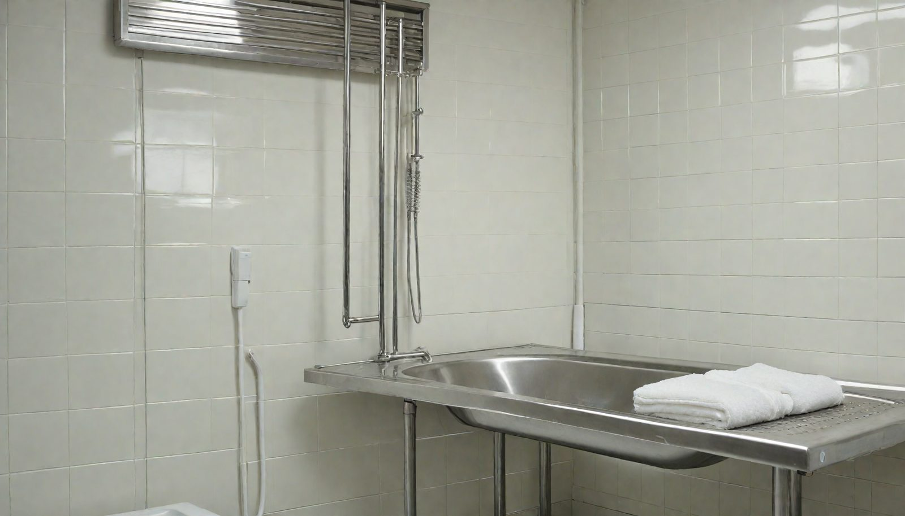

2人の担当
店主 / カットの担当
丸目 しずか
トリマーになって17年。隣の町のサロンで11年働いてから、この店を開けました。カットはほとんど私がやります。
店の奥に住んでいるので、ホテルの夜の見回りも私です。
シャンプーと乾かし / ホテルの散歩
早瀬 透
トリマーになって5年。シャンプーと乾かすのを受け持っています。大きい子を台に乗せるのも、だいたい早瀬です。
ホテルの子の朝と夕方の散歩に、土手を歩いています。
使う道具
- はさみ
- まっすぐ切る物、すく物、カーブの物の3本。顔まわりは先の丸いはさみにかえます。
- バリカン
- 刃は1頭ごとに外して洗い、消毒します。替えの刃を4枚まわしています。
- ブラシ
- 針の細かいブラシと、目の粗いくし。もつれた所は、手でほぐしてから通します。
- 台
- 高さが変わる台です。大きい子は床近くまで下げてから乗せます。
- シャンプー
- においの弱い物を1種類だけ使っています。薬用の物は、獣医さんで出された物を持ち込んでください。
乾かし方
箱に入れて風を当てる乾燥の機械は使いません。手に持つドライヤーとタオルで、風は弱めにして乾かします。
顔は風を当てず、最後にタオルで押さえます。耳の中に水が残らないように、綿で拭きます。
大きくて毛の長い子は、乾かすだけで1時間かかります。料金の表の時間が長いのは、ほとんどこの分です。
建物のこと

- 床
- すべりにくいゴムの床です。年を取った子も足を取られません。
- 部屋
- トリミング室、受付、ホテルの部屋が3つ。見取り図はホテルのページにあります。
- 登録
- 動物取扱業の登録の表示は、店頭にあります。